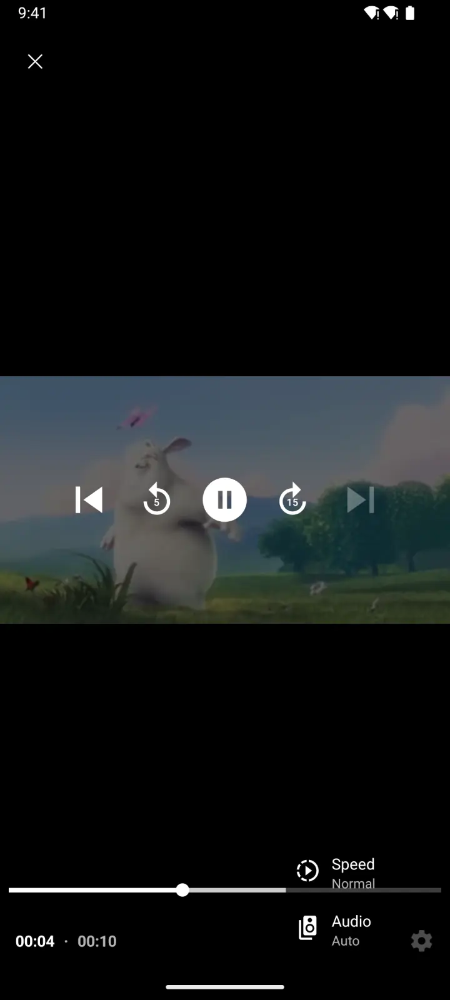

Watch, listen and look in Wayward
How-to
Play saved video and audio or view pictures inside Wayward without moving the files to another app.
Play a video or a sound
In Downloads, tap a video or a sound. Wayward's player opens full screen on black, with play and pause, back 5 seconds and forward 15 seconds, the time bar, a gear, and a round X to close it. Closing it takes you back to Downloads, with your list, search and filter as you left them.

- To jump, drag along the time bar: the picture follows your finger. Or drag sideways anywhere on the video; the middle of the screen shows where it will land and how far that is.
- The gear opens the player's speed and sound track choices, right next to it.
- The player pauses when you leave Wayward, and stops for a call or when another app starts playing.

A sound plays in the same player.
Saved videos show their real length in any player: Wayward repairs files that came without it after they download, without changing the picture or sound.
Look at a picture
Tap a picture in Downloads and it opens on black, with an X to close. A GIF or animated picture shows its first frame. If one can't be shown, Wayward says This image can't be shown here. Export it to the gallery to open it in another app. (see choose where downloads go).